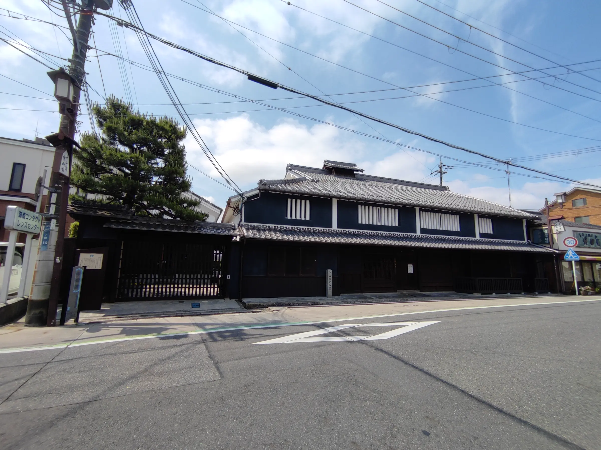
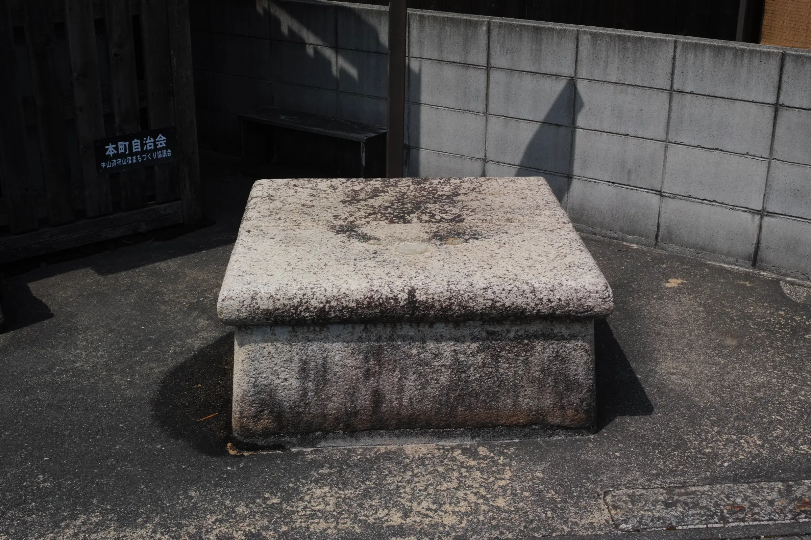
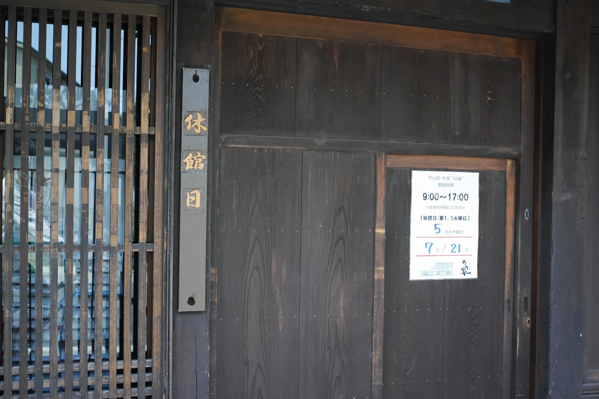
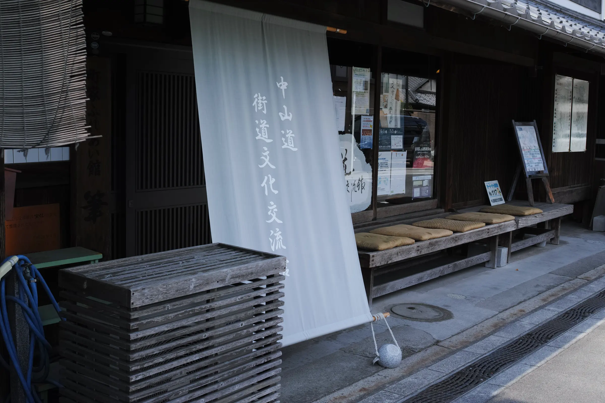

中山道の最初の休息点
守山宿
守山宿とは中山道を歩く旅人にとって、一つ目の休息点。というのも当時の旅人は一日約40㎞。京から守山宿までは34kmとちょうどそれにあたります。さてこの守山宿にはどう言ったものがあるのでしょうか？
井戸跡
実はこの守山宿があるあたりは、少し高地になっています。他の遺跡紹介ページでは水が豊富と書いていましたが、この守山宿は、野洲川の堆積物などによって少し高くなっているのです。 そのため、この辺りには多くの井戸があったと言われています。しかし、現在ではほとんどの井戸がなくなり、唯一この井戸跡のみが痕跡として残っています。

唯一残っている井戸跡。
うの家
この守山宿には、当時の景観を残す建物がいくつか存在します。その中でも、代表的なうの家をご紹介します。 うの家は、江戸時代末期から明治初期に建てられた主屋、造り酒屋などの町屋を改修し、カフェや貸しスペースとして営業している建物です。 取材日は休館日のため外からしか見れませんでしたが、当時の面影を残す佇まいでした。

休館日だった。時には休むことも大切です。
またこれらの建物以外にも、中山道を感じさせる建物や建築物はたくさんあります。 ぜひ皆さんも中山道を歩き、当時の人々の思いに馳せてみてください。

街道文化交流館という建物もあります。
アクセス情報
| 住所 | 〒524-0022 滋賀県守山市守山１丁目８ |
|---|
参考文献 (24年5月閲覧)
伊勢遺跡資料